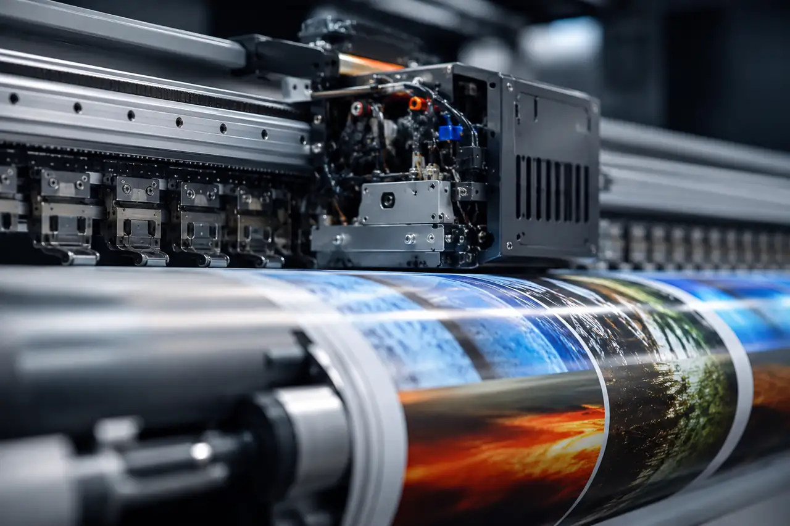
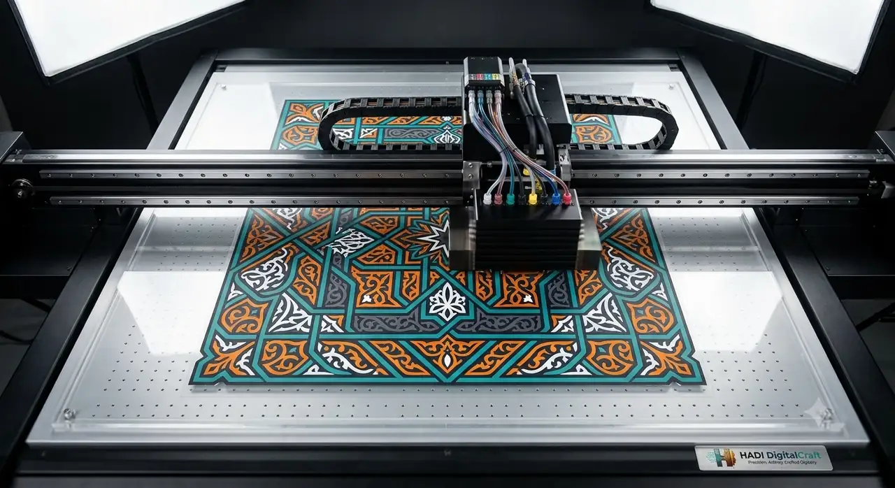

MACHINE GUIDE / DTF TEXTILE TRANSFER
DTF Textile Transfer System
A subordinate production capability for appropriate textile-transfer applications.

WHAT THE SYSTEM DOES
Understand the machine before choosing the route.
DTF textile production prints a graphic to transfer film, adds the adhesive layer, cures the transfer, and heat-applies it to an appropriate textile.
- Best-considered applicationsSelected garments, fabric merchandise and event/personalisation applications where textile transfer is the correct production route.
- Material / surface contextTextiles whose weave, heat response, elasticity and intended handling are appropriate for the selected transfer process.
- Validation boundaryThis is a production method, not a primary customer-facing HDC service family. Fabric suitability and application conditions must be reviewed before release.

PRODUCTION SEQUENCE01–03
Produce and cure the transfer
Heat-apply, inspect and confirm the result
RELATED COMMERCIAL ROUTE
EVENTS & PERSONALISATION APPLICATIONS
The machine is a production tool. The customer-facing service is selected from the actual application, material, quantity and finish requirements.
Explore related servicePROJECT ENQUIRY
Bring us the surface.
Share the object or substrate, dimensions, quantity, artwork status and required date. HDC will confirm the appropriate production route after review.
Request a quote